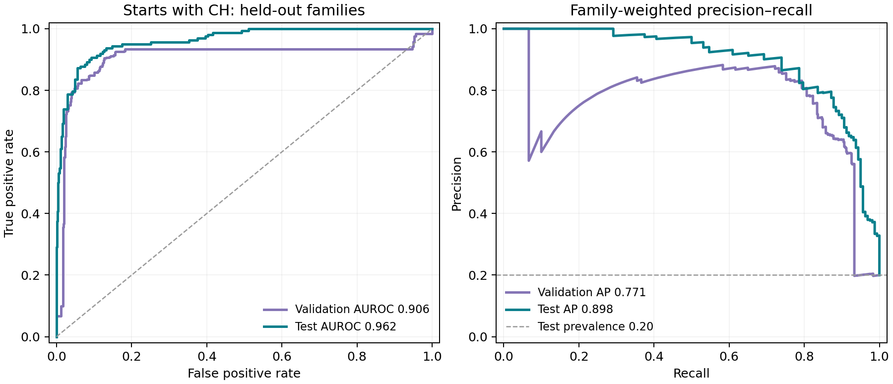
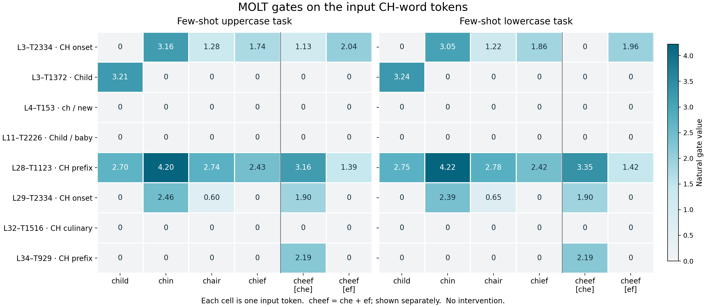

Where is “CH”
in “child”?
A MOLT labeled for CH-starting words stays silent on child. A Child-labeled MOLT activates instead. The model still gives the right letters. We followed this pattern through probes and ablations to ask where the spelling information is carried.
We found contributors, but did not establish a MOLT mechanism that accounts for “CH” in “child”. The tested single and joint removals preserve its answer.
The activation pattern looked like absorption.
We used few-shot tasks asking for the first two letters of a word, in uppercase or lowercase. In both tasks the input word was the lowercase token child; “uppercase” describes the requested answer format.
| Task | L3–T2334 · CH gate | L3–T1372 · Child gate | Native full answer |
|---|---|---|---|
| Few-shot uppercase | 0 | 3.21 | CH |
| Few-shot lowercase | 0 | 3.24 | child: ch |
L3–T2334 activates on several other CH-starting words. Its absence on child, alongside activity in a more specific Child gate, was the reason to investigate.
A candidate absorption signature. The pattern motivates the hypothesis that the broader spelling information is carried by the more specific transform. It does not demonstrate that the Child transform actually carries or uses that information.
Why this resembles the absorption paper
In A is for Absorption, an SAE’s broad starting-letter latent can miss a word while a word-specific latent carries that letter direction. Sparsity can favor representing both concepts through one active latent. The paper uses causal interventions and a validated spelling probe to connect this pattern to behavior.
Our observation resembles the starting point of that analysis. MOLTs add a complication: their output depends on the current input, through gate × UVx. A gate label alone does not identify what a transform writes. The analogy needs its own causal and representational tests here.
Exact prompts and baseline answers
Uppercase task
Give the first two letters of each word in uppercase. garden: GA window: WI table: TA child:
Native answer: CH
Lowercase task
Give the first two letters of each word in lowercase. garden: ga window: wi table: ta child:
Native answer: child: ch
All layer and transform IDs are zero-based. These measurements are natural scalar gates at the input word, not probe scores or intervention strengths. Initial activation report ↗
Removing the Child contribution did not break spelling.
We zeroed L3–T1372’s estimated contribution at the input child. The uppercase answer stayed CH; its probability rose from 99.32% to 99.75%. The lowercase answer also stayed correct.
Because the lowercase model echoes child before giving the letters, we separately removed the same contribution at both the input word and the generated child token. The full answer remained child: ch.
| L3–T1372 removal scope | Uppercase full answer | Lowercase full answer |
|---|---|---|
| Input child only | CH | child: ch |
| Input and generated child tokens | CH | child: ch |
Both lower-case edits were nonzero and verified. The result did not establish the Child contribution as necessary for spelling in these prompts. It also did not identify the alternative route that preserves the answer.
Input-only ablation ↗ · Input plus generated-child ablation ↗
The layer-3 probe failed on the case we needed.
We trained a linear classifier to read “starts with CH” from the native layer-3 MLP output at the input word. Train, validation, and test sets were separated by stem family, with variants kept together. The inspected child family was reserved for diagnostics.
What exactly went into probe training?
The language model stayed frozen. We ran few-shot questions through Qwen and trained only the separate linear probe. An actual positive training prompt was:
Give the first two letters of each word in uppercase. garden: GA window: WI table: TA chain:
We extracted the 2,560-dimensional native layer-3 MLP output at the input chain token (zero-based position 27), before that MLP output was added to the residual stream. One training pair was therefore x = MLP output at chain, y = 1, because chain starts with CH. A negative training example used the same prompt ending in according:; its input-word MLP output was paired with y = 0.
No answer was generated for extraction, and no generated CH-answer activation was used. The labels came directly from the input word’s spelling. The probe asked whether CH-starting information could be read linearly at the input word; it did not test the representation of an answer already written by the model. Both uppercase- and lowercase-answer prompt templates supplied training examples. The child family remained held out for diagnostics.
Single-token word forms only. Each retained spelling, capitalization, and optional leading-space variant had to encode as exactly one token in every main and transfer prompt. The dataset builder checked token IDs and character offsets in the actual chat prompts and discarded forms that split into multiple tokens or changed token identity in context. This provides one unambiguous word-token extraction point; the results do not establish generalization to multi-token words.
Saved training examples: row-00510 (chain, token 8819, label 1) and row-00010 (according, token 73846, label 0). Frozen dataset ↗ · Token eligibility checks ↗ · Activation extraction ↗
These aggregate scores looked useful. But the frozen probe classified the exact child inputs as not CH-starting in both original tasks. It also failed on chin.
| Reserved child diagnostic | Probe score for CH-starting | Classifier decision |
|---|---|---|
| Uppercase task | 0.73% | False negative |
| Lowercase task | 0.42% | False negative |
The decision threshold was 21.35%, selected on validation data. These are classifier probabilities, not the language model’s P(CH), and are not calibrated to natural word prevalence. The test set contains only 16 CH-positive stem families.
We did not use this probe for a Child-absorption cosine or projected-component ablation. Its failure on the target case makes that interpretation unreliable. The failure does not show that CH information is absent from layer 3, the residual stream, or the model.
Probe dataset, model selection, and numerical checks
The main splits contain 2,472 training rows, 666 validation rows, and 548 test rows. Case and leading-space variants share a family split. Negatives include C-without-H, initial H, internal CH, and other words. A regularized logistic regression was fitted with class/family weighting; C and the classification threshold were selected using validation data.
The accepted extraction used individual prompts and reproduced native forward activations exactly. An earlier batch-32 extraction failed the numerical reference check and was rejected. The probe was frozen before diagnostic inspection and was not retrained to repair child. The train/test splits, coefficients, predictions, shuffle controls, and bootstrap intervals are backed up.

Probe methods and full validation ↗ · Every frozen prediction ↗
We looked for related gates in other layers.
The updated figure compares eight selected MOLTs on five spellings: child, chin, chair, chief, and the nonce word cheef. It combines the original seven-feature comparison with L28–T1123, identified in the later all-layer scan, on the same unchanged prompts.


The native model gave the correct two letters for all four real words in both tasks. Uppercase cheef gave CE, already a baseline error. The heatmap therefore records activity, not a general spelling-success result.
The original shortlist was incomplete. The figure now includes L28–T1123 from the later scan of every layer. Its activity on child shows why the original seven-feature selection could not establish that all later CH-associated MOLTs were silent. These eight rows are still a selection, and activation alone does not establish CH specificity or absorption.
Original seven-feature comparison and token traces ↗ · Added L28–T1123 measurements and provenance ↗ · Updated figure verification ↗
A broader screen found contributors—and a format confound.
We surveyed all 2,480 gate encoders in each of 36 layers across the ten saved prompts. In the original uppercase-child task we then individually removed every active estimated contribution at two sites: the input child token and the position predicting the first answer token.
L28–T1123 was the strongest source-word candidate. Its cached label is “Ch-prefix food and noun tokens.” Removing it lowers P(CH) on child from 99.32% to 81.68%, while CI rises from 0.67% to 18.23%. The answer stays CH. A same-intended-norm random perturbation leaves P(CH) at 99.46%.
For chief, the same ablation changes the full answer from CH to CI. It is inactive on the two non-CH controls, cider and table, whose outputs stay unchanged. So we did find evidence of a CH contributor; that still does not establish the absorption mechanism for child.

Several prediction-position ablations nearly eliminated the probability of CH as the first token. We continued all 15 changed-first-token conditions to full answers. Every one still gave the correct letters, as child: CH or Child: CH.
CHchild: CHA different opening token; the same two letters.This separates effects on answer format from effects on the spelling decision. A large first-token probability drop was not, by itself, a failure to identify CH.
All-layer activity and causal effects

Coverage: 155 active pairs at the input word and 255 at the prediction position, plus one near-threshold inactive check. Group removals and whole-native-MLP site controls were also run. These two positions do not exhaust the model’s circuit.
Complete screen and transfer controls ↗ · All individual ablations ↗
Removing Child and the later CH contributor together still preserved the answer.
Could L3–T1372 and L28–T1123 jointly carry the information, so that both must be removed? We ablated both at the input child token only. L28’s input, gate, and low-rank contribution were recomputed after the L3 intervention.
| Contribution removed at input child | Full greedy answer | P(CH) |
|---|---|---|
| No ablation | CH | 99.32% |
| L3–T1372 only | CH | 99.75% |
| L28–T1123 only | CH | 81.68% |
| Both MOLTs | CH | 92.28% |
P(CH) is measured at the first answer token. The full greedy answer is CH in all four conditions.
In the uppercase task, removing both leaves 92.28% P(CH), higher than the 81.68% remaining after L28-only removal. Removing L3 partially offsets the confidence drop. We did not observe a joint failure on child.
The single-feature controls reproduce earlier results exactly. Independent checks verify both actual edits and the updated L28 state. In the lowercase joint test, generated child tokens are unedited and can provide spelling information again. Joint-ablation records and verification ↗
The localization attempt remains unresolved.
We did not identify the MOLT mechanism that accounts for “CH” in “child”.
The initial gate pattern was suggestive. The layer-3 probe failed on child, so it could not support the intended absorption analysis. Later screening found contributors—including L28–T1123—but the tested single and joint removals preserved child’s correct letters.
Feature absorption in this case is unconfirmed. The data leave open other MOLTs, distributed contributions, attention-mediated routes, residual information, and information at other token positions. They do not establish that a single hidden “child → CH” MOLT must exist.
A next investigation would first need a readout that generalizes to child at the relevant layer and position, then causal tests that isolate letter information from output formatting. This report records where the current attempt stopped.
Intervention semantics and limits
The base model remains native Qwen3-4B. A selected transform’s contribution is computed from the standardized residual after attention and before post-attention layer normalization, then subtracted from the native raw MLP output. The edit uses FP32 arithmetic followed by BF16 rounding; downstream computation and attention continue normally.
z = (current input - input mean) / input std contribution = gate(z) × ((z × V) × U) × output std edited native MLP output = native MLP output - contribution
The MOLT reconstruction remainder is retained. The median relative reconstruction error across the screened layers is about 0.55 at the source and 0.50 at the prediction site; some reconstruction-only baselines already change answer format. These substantial errors limit claims about an intrinsic decomposition of the native model.
The failed probe was trained on layer-3 raw MLP output, not on the entire residual stream. Its diagnostic failure is a readout limitation. A gate’s silence, an unchanged greedy answer, or an unvalidated probe angle cannot settle whether spelling information exists elsewhere or has been absorbed.
The study is a small, selected spelling pilot. It does not estimate absorption prevalence across MOLTs, words, tasks, or models.
Evidence, code, and backup
Every stage below has saved prompts, measurements, and verification records. Publication reuses the frozen runs; it does not add inference.
| Stage | Full report | Measurements | Code |
|---|---|---|---|
| Initial activations | Report ↗ | Token traces ↗ | Source ↗ |
| Child input ablation | Report ↗ | Summary ↗ | Source ↗ |
| Input + generated child | Report ↗ | Summary ↗ | Source ↗ |
| CH linear probe | Report ↗ | Predictions ↗ | Source ↗ |
| Updated eight-feature heatmap | Figure and scope ↗ | Gate values ↗ | Source ↗ |
| All-layer causal screen | Report ↗ | All single tests ↗ | Source ↗ |
| Joint child ablation | Report ↗ | Summary ↗ | Source ↗ |
Overview facts ↗ · Per-file backup hashes and intentional omissions ↗ · Backup coverage ↗ · Figure and source provenance ↗
Pinned models and report inputs
Base model: Qwen/Qwen3-4B at 1cfa9a7208912126459214e8b04321603b3df60c. MOLTs: georglange/qwen3-4b-molt at 081ce901b090b64aeecf9bc8709b57c10411e32a.
Model weights and large activation caches remain local; their regeneration protocols and existing hashes are preserved. Labels come from dated authenticated-dashboard caches and serve as candidate descriptions. Probe fitting used the frozen dataset and raw MLP coordinates.
This overview is generated by build.py from these measured inputs:
{
"results/2026-10-19-ch-crosslayer-activation/summary.json": "94897ee6dda68d3c70bd808a03fba8ecfb709721d92cd90f9b191fd74a12e487",
"results/2026-10-19-ch-prefix-probe/summary.json": "c324c375fe7fc165e3d0e56d9f6143e325ba19f8b9e687bd9c8c5818a5458b78",
"results/2026-10-19-ch-child-all-occurrences-ablation/summary.json": "549064d13cd2c73726ec0e917f3f52ee402ff1d80dfb9972ea9d6ca105a01588",
"results/2026-10-19-ch-child-joint-ablation/summary.json": "80afab770e26af3bb547ea3f58d1428e4fa023161f1e4b555cfd0dc5465c963c",
"results/2026-10-19-ch-alllayer-causal-screen/summary.json": "46d92d8debe16d3731f797fa4b7643a4b67474923146efb2c6406696f45794cf",
"results/2026-10-19-ch-alllayer-causal-screen/L28-T1123-transfer.json": "2acaa74a80a7af6a897936ce150ffa8512535cefa179dbd09f3c1a537dbf4030",
"results/2026-10-19-ch-crosslayer-activation/input-word-gates.csv": "fe25ba62e4ac054d81f8a12f275e12106cde5bdd6bc27eb4023b0719daece17a",
"results/2026-10-19-ch-absorption-overview/L28-T1123-input-gates.json": "e5436dc4d8ecef33e5e609f5688ccfc7ae99969b0086fafc1dd3053f87beed85"
}